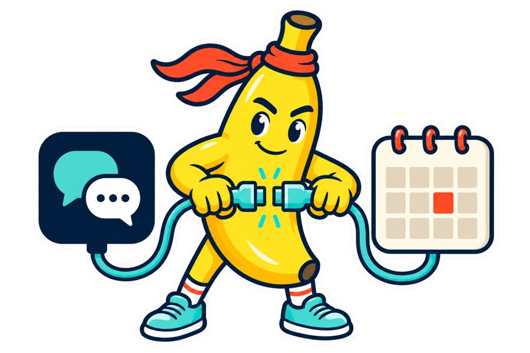

Start Long Run Hybrid Coach
You need an Intervals.icu account and an AI assistant that supports remote MCP connectors. Connect the coach to the training evidence in the account you already control.
If you don't have an Intervals.icu account yet, it's free — the connection flow below reaches its sign-in page, where you can create one with Google in about 30 seconds.
Connect in four steps
https://mcp.paceandstaystrong.com/mcp
-
Open your AI assistant's connector settings.
Choose the option to add a remote MCP connector or remote MCP server.
claude.ai or Claude Desktop: Settings → Connectors → Add custom connector.
ChatGPT: full read/write connector access is currently in beta for Business, Enterprise, and Edu workspaces through Apps/developer mode; everyone else can wait for this connector's listing to publish in the ChatGPT directory.
-
Add the Long Run Hybrid Coach endpoint.
Paste the address above into the remote MCP server URL field, then continue.
-
Approve access in Intervals.icu.
Sign in when Intervals.icu opens its consent page. Tick all four permissions, then approve. Leaving one unticked does not make the connection safer; it makes one capability fail in a way that is hard to trace back.
-
Return to the assistant and start the conversation.
Make sure the connector is available in the conversation, then ask the coach to read your recent training.

Is your Intervals.icu account new or empty?
The coach only reads what Intervals.icu already has. If the account is new, there are two ways to bring your history in before you ask it to read your training:
- Connect a device or app you already use. In Intervals.icu's own Settings, connect Garmin or your existing watch or training app account. Past activity backfills automatically — come back and ask the coach to re-read your training once it has arrived.
- Send an export straight to the coach. Give the coach a CSV, an Apple Health export, or a .fit file directly in the conversation, and ask it to import your history.
What happens next
The coach reads the evidence available in Intervals.icu and talks through the current direction with you. If it proposes a calendar workout, you see the full workout before anything is written. A successful delivery means Intervals.icu accepted and returned the workout; it does not prove that a watch or another device received it.